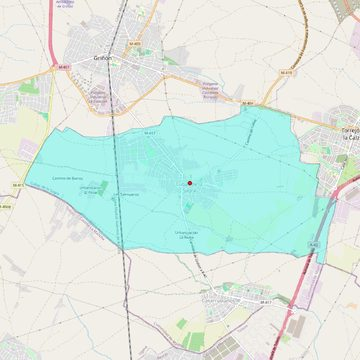

San Andrés Apóstol
- Arciprestazgo
- Griñón
- Población
- Cubas de la Sagra
- Dirección postal
- Pza. de la Constitución, 3
- Código postal
- 28978
- Extensión
- 12,85 km² (1.285 ha)
- Teléfono
- 918 120 102
- Correo electrónico
- sanandresapostol-cubas@diocesisgetafe.es
- Información demográfica
- De la parroquia · De la población (Cubas de la Sagra) · Del arciprestazgo (Griñón)
- Resumen para imprimir
- La parroquia en una hoja (A4)


Descargar mapaLímites según decreto
Los del término municipal
¿Algún dato de esta parroquia es incorrecto o ha cambiado? Comuníquenoslo.